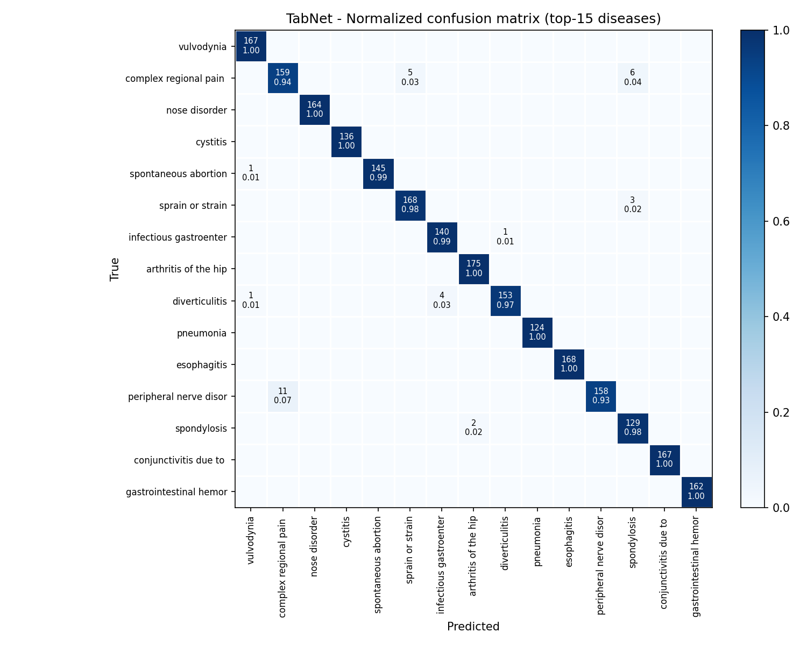
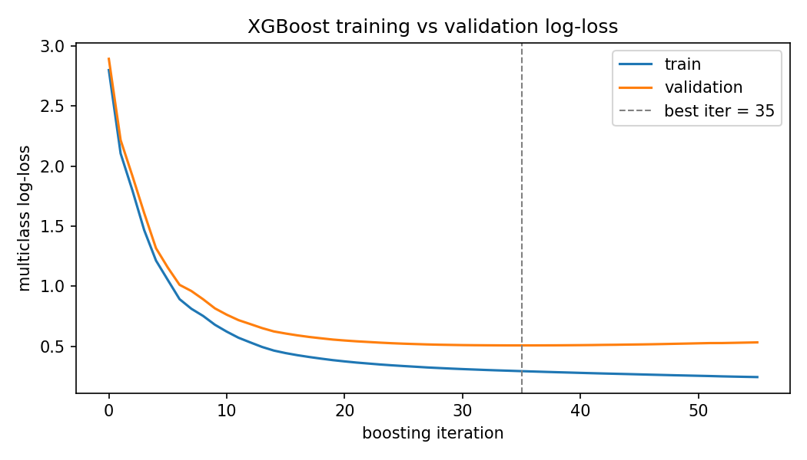
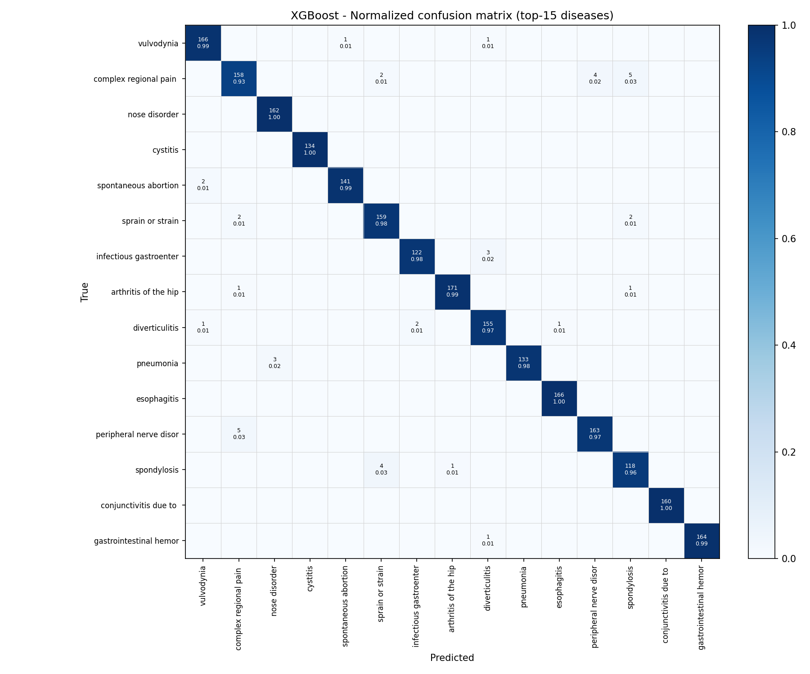
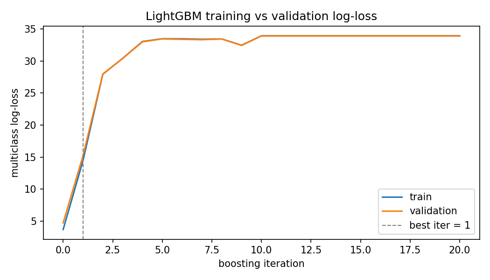
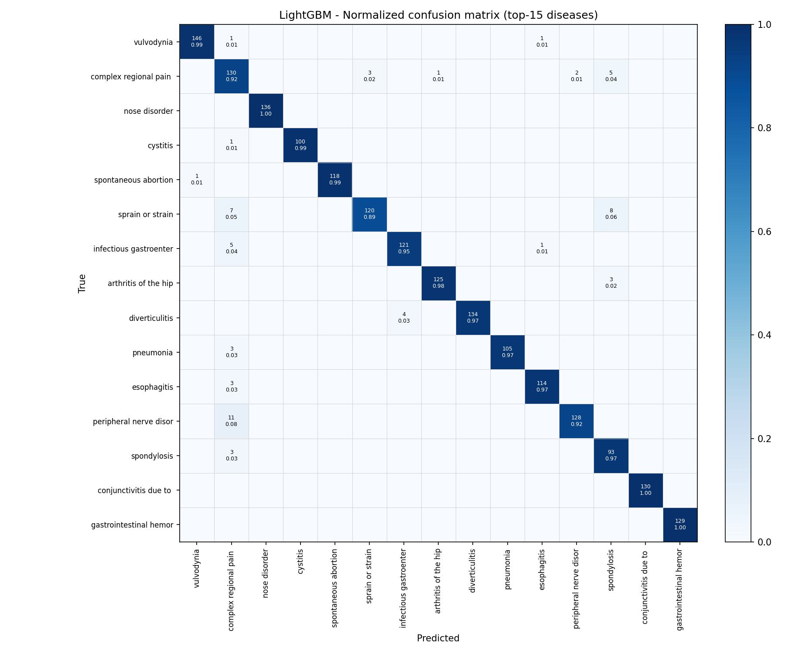

Undergraduate Research & Thesis
Title: Design of a Machine Learning-Based Smart Health Assistant for Early Diagnosis and Specialist Mapping.
Department of Computer Science & Engineering, American International University-Bangladesh (AIUB).
Comparative Benchmark of 6 Tabular Machine Learning Architectures on 200,000+ Multi-Disease Records
Master Dataset Engineering
Standardized and combined 4 disparate open-source medical datasets into an internally consistent master repository. Implemented strict rare-class exclusion rules to handle multi-label class imbalance across 512 disease categories.
6-Model Benchmark
Trained and compared TabNet (PyTorch), Dense MLP (Keras), XGBoost, LightGBM, Logistic Regression, and Random Forest using 5-Fold Stratified Cross-Validation.
Top-1 & Top-3 Diagnostic Accuracy
Evaluated shortlist-aware accuracy. Multilayer Perceptron (MLP) achieved 83.01% Top-1 and 94.81% Top-3 accuracy, closely followed by TabNet (81.57% / 93.99%) and XGBoost (80.17% / 93.58%).
Deployment Optimization
Selected and serialized regularized Logistic Regression (~91.10% Top-3 on Master set) for sub-20ms low-latency mobile inference over FastAPI backend, connecting 296+ specialist doctors to patients without heavy server overhead.
Large Dataset 5-Fold Cross-Validation Performance Summary
| Model Architecture | Framework | CV Top-1 Accuracy | CV Top-3 Accuracy | Deployment Suitability |
|---|---|---|---|---|
| Multilayer Perceptron (MLP) | Keras / T4 GPU | 83.01% ± 0.23% | 94.81% ± 0.06% | High Precision / Research |
| TabNet (Attention-based) | PyTorch / GPU | 81.57% ± 0.31% | 93.99% ± 0.10% | Interpretable Attention |
| XGBoost | XGBoost / GPU | 80.17% ± 0.13% | 93.58% ± 0.08% | Tree Ensemble |
| LightGBM | LightGBM / CPU | 64.63% ± 0.20% | 88.54% ± 0.12% | Baseline |
Authentic Empirical Experimental Visualizations


Deep MLP Training Hyperparameters (T4 GPU)
- Layer Stack: 512 → 256 → 128 (Dense + BatchNorm)
- Dropout Regularization: 0.35 / 0.30 / 0.20
- Optimizer & LR: Adam (lr = 1e-3, batch size = 1024)
- Top-1 CV Accuracy: 83.01% ± 0.23%
- Top-3 CV Accuracy: 94.81% ± 0.06% (Highest in Benchmark)
- Corpus Size: 187,850 Cleaned Records (512 Classes)



